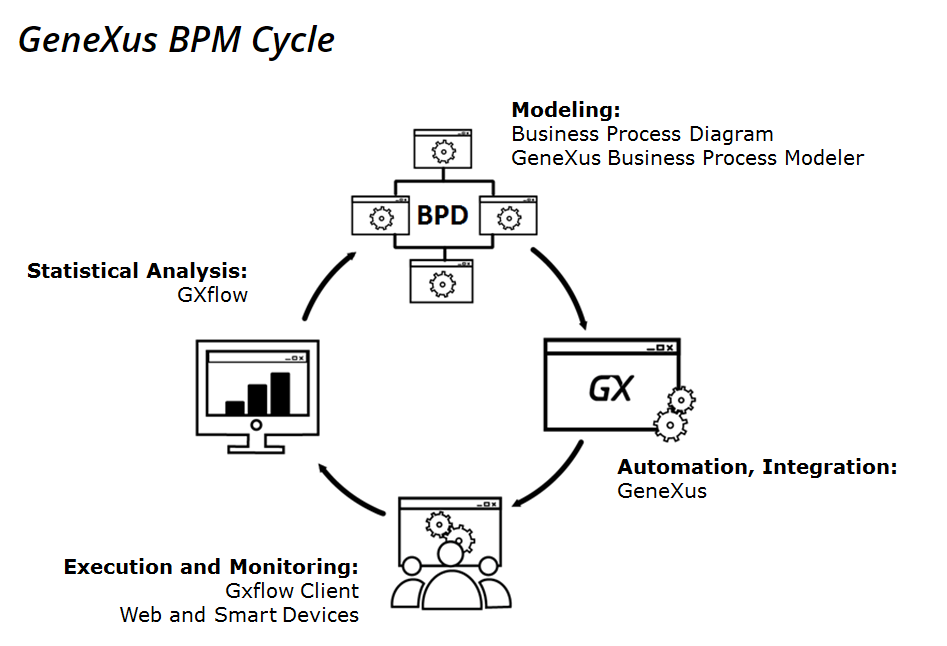

|
The GeneXus BPM Suite is a set of tools that enable us to model a business process, to convert the model into a functional application, run and monitor the application and optimize their results, by offering a tool for each stage in the BPM cycle. The BPM process in GeneXus covers 4 stages:  ModelingThis stage focuses on designing the business process. This stage may be done in GeneXus using the Business Process Diagram object or the GeneXus Business Process Modeler tool that is installed, free of charge, independent from GeneXus. To learn how to start modeling a process refer to Getting Started: Modeling a business process. If you already have business processes developed with another tool and want to integrate them to GeneXus, they must be of the XPDL type. To include them we offer the IDE option Import From XPDL. It is also possible to export the GX diagrams in XPDL format. To learn how to do it refer to here. Automation, IntegrationOnce the business processes are modeled we must make them automatic to advance with the BPM cycle. To accomplish this we develop the GeneXus objects that will later be included in the process. Execution and monitoringThis stage focuses on the execution and monitoring of the process designed, to validate whether it behaves as expected, and to assess if it is necessary to optimize it. Here, again, we will use GeneXus, since it includes the GXflow client to this end. This client includes both the web mode and Smart Devices. Optimization and Statistical analysisThe GXflow client provides many statistics reports which allows us to evaluate the behaviour of our process, and make ajustments on his performance. See alsoFor a BPMN introduction, please go to Introduction to business process modeling based on the BPMN standard For a guide on how to develop a full BPM application (from modeling to process execution) refer to My first BPM Application. For a complete on line course on how to develop a full BPM application (from modeling to process execution and optimization) refer to GeneXus BPM Suite course. |